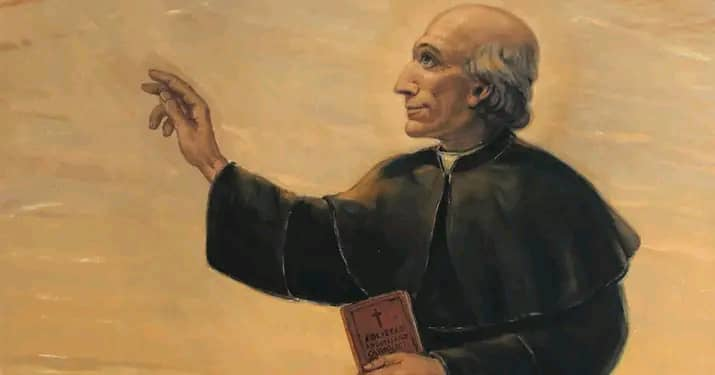
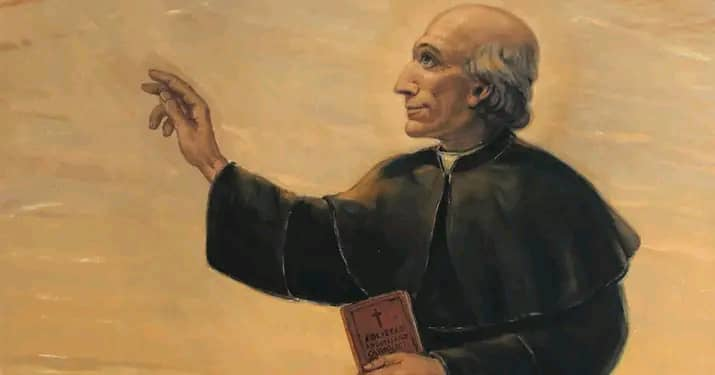

welcome to the website of the pallottines, nigerian delegature
we are the society of the catholice apostolate
founded by St. Vincent Pallotti, a Roman priest.
our founder was an advocate of lay apostolate, he wanted a church of communion and collaboration between the clergy and the lay. St. Vincent Pallotti (1795-1850) was a visionary Italian Catholic priest who is most renowned for his profound emphasis on the lay apostolate within the Catholic Church. His insights and initiatives were remarkably ahead of their time, anticipating many of the themes that would later be formally articulated by the Second Vatican Council (1962-1965) concerning the role of the laity. Understanding the Lay Apostolate: In the Catholic Church, the "lay apostolate" refers to the broader mission of laypeople (those who are not ordained clergy or consecrated religious) to participate actively in the Church's apostolic work. This means spreading the Gospel and transforming the world according to Christian values, primarily in their everyday environments such as families, workplaces, communities, and social life. It emphasizes that every baptized person, by virtue of their baptism and confirmation, shares in the priestly, prophetic, and kingly mission of Christ and has a right and duty to engage in the Church's evangelizing mission. Pallotti's Promotion of the Lay Apostolate:Pallotti's central contribution to the concept of the lay apostolate was his founding of the Union of the Catholic Apostolate (UAC) in 1835. This was a revolutionary initiative for its time because it sought to bring together all classes of people – priests, religious, and especially lay individuals – to work collaboratively for the "great glory of God and for one's own salvation and that of one's neighbor." Here's how Pallotti promoted the lay apostolate: Universal Call to Apostolate: Pallotti firmly believed that the apostolate was not reserved for the clergy and religious alone but was a universal call extended to every baptized Christian. He saw every individual, regardless of their state in life, as having a mission to spread the faith and contribute to the Church's work. Foundation of the Union of the Catholic Apostolate (UAC): The UAC was designed as an association where all members of the Church could unite their efforts. This included organizing missions, providing education, and engaging in charitable works. It provided a concrete structure for lay people to actively use their gifts and talents in service of God and others. Practical Engagement in Society: Pallotti didn't limit the apostolate to church settings. He encouraged lay people to live out their faith in their daily lives and professions, sanctifying the secular world. He established schools for the poor, vocational training centers, and ministered tirelessly to the sick and marginalized, including during the cholera epidemic of 1837. These efforts often involved significant collaboration with lay individuals. Emphasis on Collaboration and Co-responsibility: A core tenet of Pallotti's vision was the idea of "co-responsibility" among all the baptized. He envisioned a Church where clergy, religious, and laity worked together, sharing the responsibility for evangelization and the renewal of faith and charity. This collaborative spirit was central to the UAC's functioning. Anticipating Vatican II: Long before Vatican II officially recognized and emphasized the vital role of the laity, Pallotti was already putting this principle into practice. His vision of a "universal apostolate" foreshadowed the Council's teachings on the lay faithful's participation in the Church's mission in the world. In essence, St. Vincent Pallotti's legacy is deeply intertwined with the concept of the lay apostolate. He was a pioneer in recognizing and empowering the laity, providing structures and a spiritual framework for their active involvement in the Church's mission, a vision that continues to inspire and guide the Pallottine Family (the Society of the Catholic Apostolate, the Pallottine Sisters, and the Union of Catholic Apostolate) today.
works of pallottipallotti worked miracles both in his life time and after his death,
this earned him much reverence throught Rome and almost the entire italy. Saint Vincent Pallotti (1795-1850) was a Roman Catholic priest known for his tireless dedication to the poor, sick, and marginalized, and for his vision of a universal apostolate involving all members of the Church. His life and cause for canonization were marked by numerous attributed miracles, both during his lifetime and after his death.